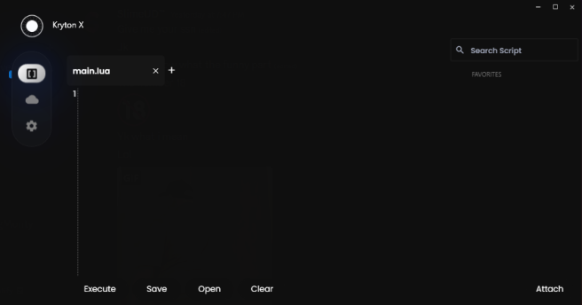

The first and best Internal IDE after Hyperion's introduction.

Execution Service
We are the safest script execution service and a high unc executor, not detected. Level 7 .
Easy And Fast
Kryton is the fastest executor ever and the most simple one with very clean UI. Level 7.
Auto Scripts
Auto Scripts work on the executor and we're constantly updating our executor and api..
Artificial Intelligence
Our AI is here to help you find and code scripts want help with learning lua? our ai will find the fastest way to help you!, Kryton